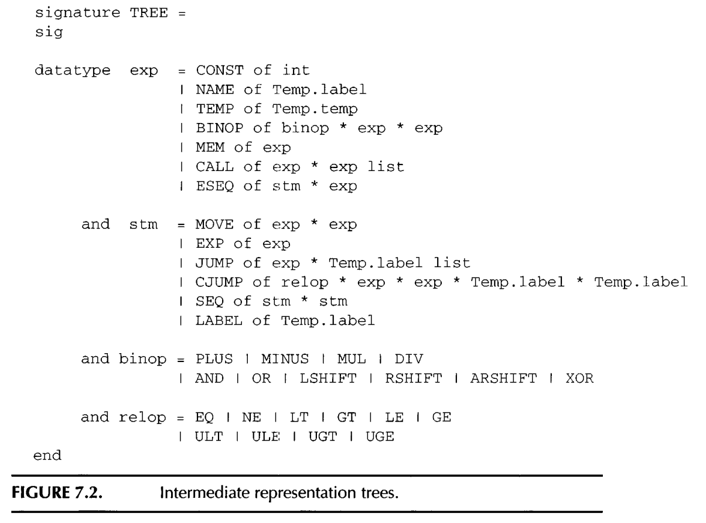
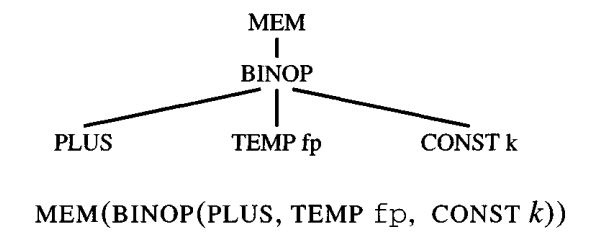

An intermediate representation (IR) is a kind of abstract machine language that can express the target-machine operations without committing to too much machine-specific detail.
It is also independent of the details of the source language.
The tree.sml defines the node type for IR representation, which is similar to instruction selection set.
The intermediate representation (Tree) language expresses only one abstract operation in each tree node: memory fetch or store, addition or subtraction, conditional jump, and so on.
Example:

Translation of abstract syntax expressions into intermediate trees is reasonably straightforward; but there are many cases to handle.
For a simple variable v declared in the current procedure’s stack frame, we translate it as

Array may need external call to allocall like malloc to allocate size and move the return value to a variable or register.
can be created with SEQ and JUMP
add new lael to the string, and put into a global list, so that later we can put it into global section.
The call to transDec will not only return a result record (containing a new type environment, value environment, and Trans l a t e , exp) but also will have side effects: for each variable declaration within the declaration, additional space will be reserved in the current level’s frame. Also, for each function declaration, a new “fragment” of Tree code will be kept for the function’s body
transDec must also return an exp l i s t of assignment expressions that accomplish these initializations.
Each Tiger function is translated into a segment of assembly language with a prologue, a body, and an epilogue. The body of a Tiger function is an expression, and the body of the translation is simply the translation of that expression.
prolog and epilogue are used to handle stack pointer to allocate frame and exit from new frame.
Fucntion body is what really do by the function.